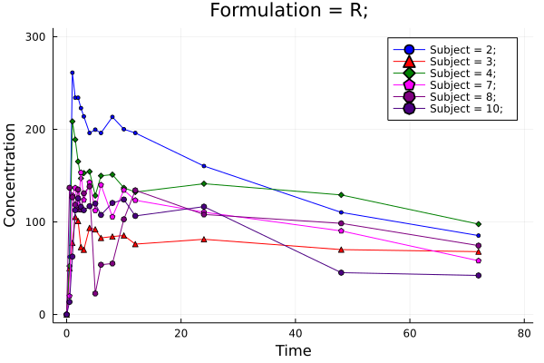

Examples
Import
Use pkimport to import PK data from table to subject set.
using MetidaNCA, CSV, DataFrames;
pkdata2 = CSV.File(joinpath(dirname(pathof(MetidaNCA)), "..", "test", "csv", "pkdata2.csv")) |> DataFrame
ds = pkimport(pkdata2, :Time, :Concentration, [:Subject, :Formulation]; dosetime = DoseTime(dose = 100, time = 0))
sort!(ds, :Subject)DataSet: Pharmacokinetics subject
Length: 10
Subject 1: Subject => 1, Formulation => T,
Subject 2: Subject => 2, Formulation => R,
Subject 3: Subject => 3, Formulation => R,
Subject 4: Subject => 4, Formulation => R,
Subject 5: Subject => 5, Formulation => T,
Subject 6: Subject => 6, Formulation => T,
Subject 7: Subject => 7, Formulation => R,
Subject 8: Subject => 8, Formulation => R,
Subject 9: Subject => 9, Formulation => T,
Subject 10: Subject => 10, Formulation => R,
NCA
Perform NCA analysis with nca!. Access to result set is similar to DataFrame or any table. Find parameter list here.
dsnca = nca!(ds, adm = :ev, calcm = :lint)
dsnca[:, :AUClast]10-element Vector{Float64}:
9585.42175
10112.175500000001
5396.549749999999
9317.83575
9561.26
6966.598000000001
7029.5735
7110.674499999999
8315.080249999999
5620.8945Partial AUC
dsnca = nca!(ds, adm = :ev, calcm = :lint, partials = [(1, 7)])
dsnca[:, :AUC_1_7]10-element Vector{Float64}:
841.7427500000001
1265.2779999999998
521.33225
924.9775
934.97
800.5465
782.66975
555.19825
864.5880000000001
678.70375Result modification or custom parameter function
# Define modify! function for new parameter
function newparam(data)
data.result[:AUChalf] = data.result[:AUClast] / 2
end
dsncanp = nca!(ds, modify! = newparam)
dsncanp[1][:AUChalf]4792.710875Function newparam applyed to NCAResult.
Print output
nca!(ds[1], adm = :ev, calcm = :lint, verbose = 2); PK/PD subject NCA result
-------------- -------------
Parameter Value
-------------- -------------
Rsqn 3.0
Vzlast 3.08222
Tmax 1.0
AUMCinf_pred 1.30681e7
MRTinf_pred 295.374
ARsq 0.714769
AUClast 9585.42
MRTinf 293.162
AUCinf_pred 44242.6
LZ -0.00338474
LZint 5.00849
Obsnum 16.0
Clast 112.846
Dose 100.0
Tlag 0.0
Cdose 0.0
⋮ ⋮
-------------- -------------
17 rows omitted
Plotting
using Plots
# plot 1
p = pkplot(ds; typesort = :Subject, pagesort = NoPageSort(), filter = Dict(:Formulation => "R"))
png(p, "plot1.png")
# plot 2
p = pkplot(ds; typesort = :Formulation, pagesort = NoPageSort(), legend = true)
png(p, "plot2.png")
# plot 3
# Plotting with elimination results (only for results)
p = pkplot(dsnca; elim = true, ls = true)
png(p[1], "plot3.png")
# plot 4
p = pkplot(ds; typesort = :Subject, pagesort = :Formulation)
png(p[1], "plot4.png")
# plot 5
p = vpcplot(ds)
png(p, "vpcplot.png")"vpcplot.png"Plot 1

Plot 2
Plot 3
Plot 4
Plot 5
MetidaNCA.mergeplots!(plt, plts...)
If Plots.jl installed? you can use MetidaNCA.mergeplots! function to merge 2 or more plots. This function not exported.
MetidaNCA.mergeplots!(plt, plts...)Set dose time
You can set dose time with setdosetime! for whole subject set or for selected subjects.
dt = DoseTime(dose = 200, time = 0)
setdosetime!(ds, dt, Dict(:Formulation => "R"))
dsnca = nca!(ds)
dsnca[:, :Dose]10-element Vector{Float64}:
100.0
200.0
200.0
200.0
100.0
100.0
200.0
200.0
100.0
200.0Set range for elimination
By default no exclusions or range to calculate elimination parameters specified. With setkelrange! elimination range and exclusion can be specified for whole subject set or for any selected subjects. The observation number is used to indicate the boundaries of the elimination calculation and the observations to be excluded.
kr = ElimRange(kelstart = 4, kelend = 12, kelexcl = Int[5,6])
setkelrange!(ds, kr, [1,2,3])
dsnca = nca!(ds)
p = pkplot(dsnca[1]; elim = true)
png(p, "plot5.png")
getkeldata(dsnca[1])Elimination table:
------------ ---------- ------------ --------- ---------- ------------- ---
Strat time End time a b r² Adjusted r² N
------------ ---------- ------------ --------- ---------- ------------- ---
1.5 10.0 -0.0127605 5.00469 0.128943 -0.045268 7
------------ ---------- ------------ --------- ---------- ------------- ---
Plot 5
Without import
You can use nca for NCA analysis directly from tabular data.
dsnca = nca(pkdata2, :Time, :Concentration, [:Subject, :Formulation]; dosetime = DoseTime(dose = 100, time = 0))
sort!(dsnca, :Subject)
dsnca[:, :AUClast]10-element Vector{Float64}:
9585.42175
10112.175500000001
5396.549749999999
9317.83575
9561.26
6966.598000000001
7029.5735
7110.674499999999
8315.080249999999
5620.8945PD subject
Use pdimport to import PD data from table to subject set.
Import & NCA
pddata = CSV.File(joinpath(dirname(pathof(MetidaNCA)), "..", "test", "csv", "pddata.csv")) |> DataFrame
pd = MetidaNCA.pdimport(pddata, :time, :obs, :subj; bl = 1.5, th = 5.0)
MetidaNCA.nca!(pd[1]) PK/PD subject NCA result
----------- ---------
Parameter Value
----------- ---------
Tmax 5.0
TBBL 3.2381
Rmin 0.0
TIMEBTW 4.0
AUCBTW 11.7333
AUCBBL 1.80952
AUCNETT -19.35
Obsnum 13.0
AUCABL 13.9595
TATH 1.7619
BL 1.5
AUCBTH 21.5762
TABL 5.7619
TBTH 7.2381
TH 5.0
Rmax 8.0
AUCATH 2.22619
AUCNETB 12.15
----------- ---------
PD subject plotting
p = MetidaNCA.pkplot(pd[1], drawth = true, drawbl = true)
png(p, "plot6.png")
# Plot DoseTime (can be used for PK plots)
dt = DoseTime(dose = 200, time = 1.5)
setdosetime!(pd, dt)
p = MetidaNCA.pkplot(pd[1], drawdt = true)
png(p, "plot7.png")"plot7.png"Plot 6